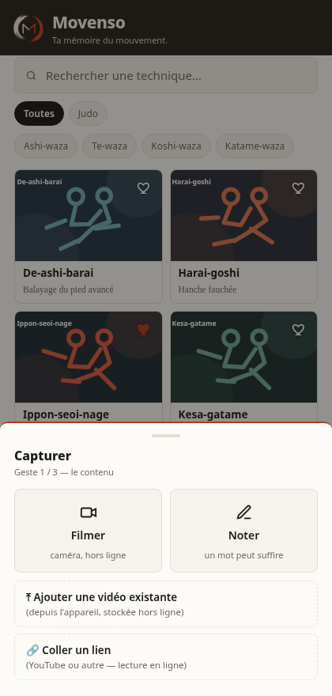
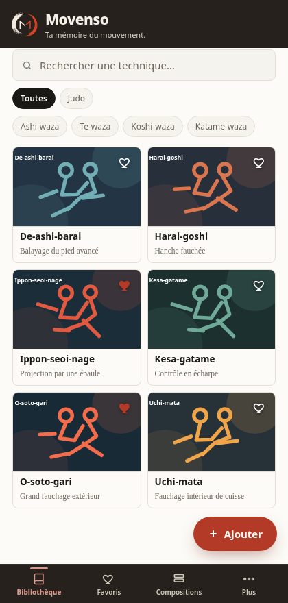
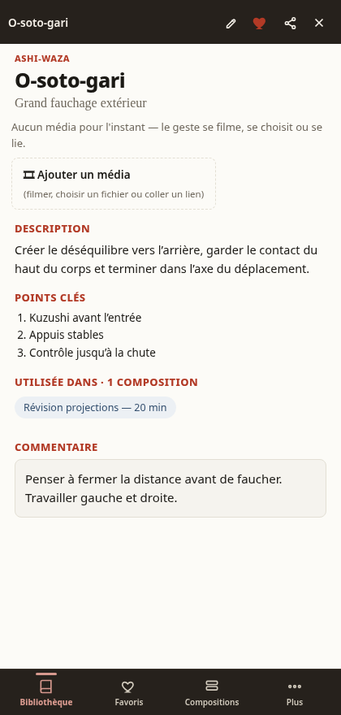
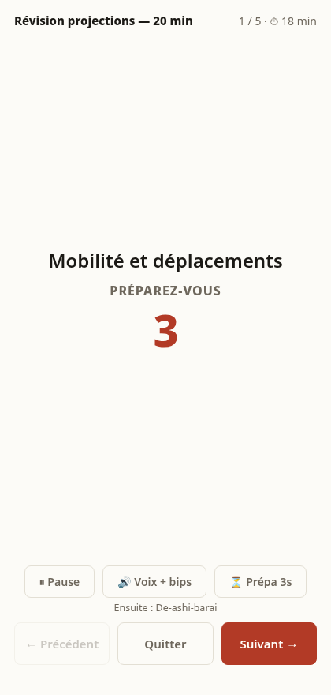
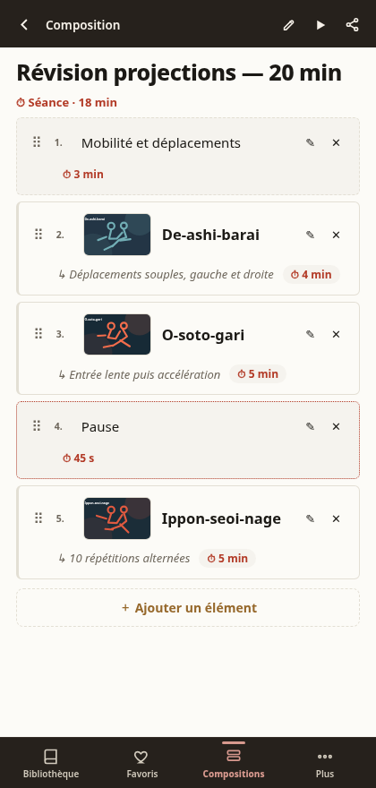

1
Capture sans casser le rythme
Filme, choisis une vidéo, colle un lien ou écris simplement une note. Le classement peut attendre.
L’application
Movenso est conçu pour être utile dès l’ouverture : chercher une technique, ajouter un repère, capturer le cours ou lancer une séance.



Le parcours

Filme, choisis une vidéo, colle un lien ou écris simplement une note. Le classement peut attendre.
Recherche, discipline, famille et favoris permettent de revenir rapidement sur ce qui compte.
La base du pack reste distincte de tes commentaires. Tu enrichis sans perdre la provenance du contenu.

Assemble techniques, consignes, durées et pauses, puis lance le déroulé chronométré.
Disponibilité
Google Play sera le canal Android officiel. Le site conserve aussi une version navigateur et une copie signée de l’APK publié.
Canal officiel
Installation, signature et mises à jour depuis le magasin officiel Android.
Bientôt sur Google PlayPC · Mac · Linux
La même interface sur grand écran. Les données restent dans le stockage du navigateur utilisé.
Ouvrir MovensoInstallation manuelle
Une copie de la version officielle pour les personnes qui souhaitent installer l’APK manuellement.
Voir les versionsQuestions simples
Non. Movenso est utilisable sans compte et sans synchronisation obligatoire.
Non. Elle est distribuée vierge. Tu peux créer ta bibliothèque ou importer les packs facultatifs proposés sur le site.
Dans le stockage local de l’installation utilisée. Une sauvegarde complète permet de déplacer ou restaurer la bibliothèque.
Oui. Il sert de base de départ. Tes apports personnels restent identifiables et exportables.